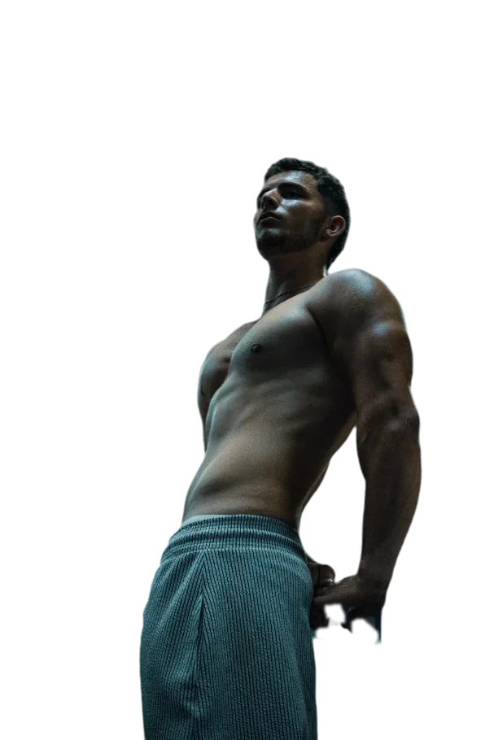
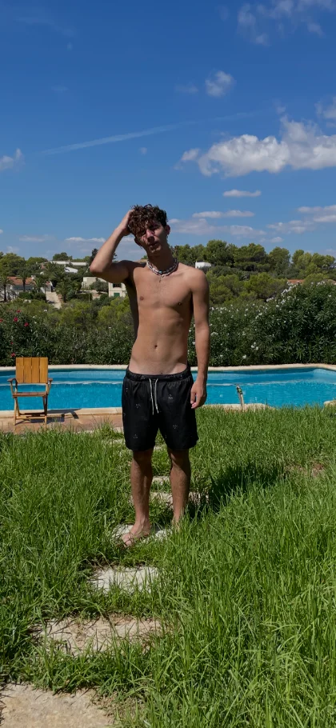
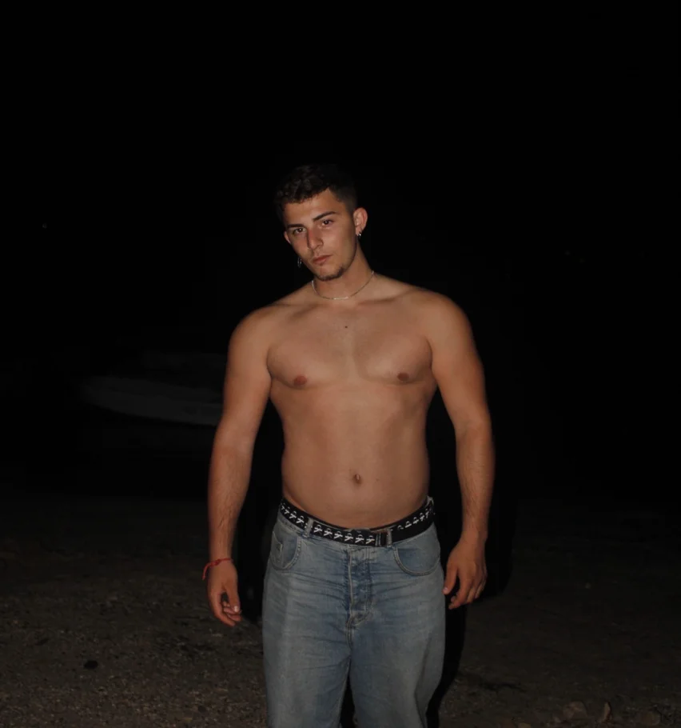
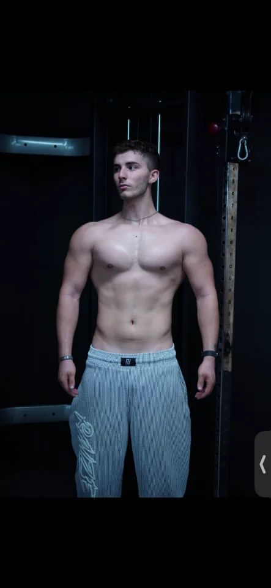
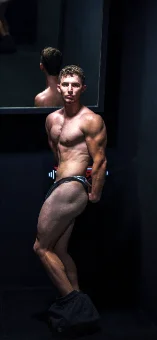
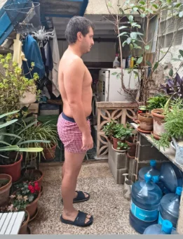
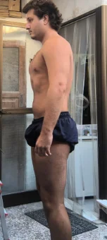
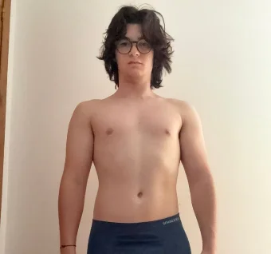
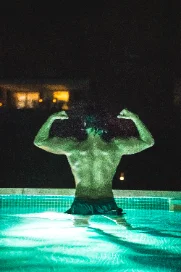

Así funciona Kaizen
Una montaña se sube paso a paso.
Cinco etapas. Y dentro de ellas, tu plan.
Método Kaizen
Pérdida de grasa
Para hombres
de 25 a 45 años
Pérdida de grasa · Hombres de 25 a 45

Entrenamiento y alimentación adaptados a tu vida, con seguimiento 1 a 1. Mejoras pequeñas cada semana, sin dietas extremas y sin volver a empezar cada lunes.
+50 clientes−50 kg perdidos
Un año tiene 52 lunes.
¿Cuántos llevas diciendo «el lunes empiezo»?
52 semanas · 52 oportunidades de empezar de cero
¿Te suena?
No necesitas identificarte con todo. Con una sola frase ya sabes de qué hablamos.
Llevo años diciendo que empiezo el lunes.
Una cena, un viaje, una semana mala. Y pasa otro mes sin que nada cambie.
Lo he probado todo y nada me ha durado.
Arrancas con energía y en tres semanas estás donde empezaste.
Ya no me reconozco en el espejo.
Evitas las fotos y quitarte la camiseta en la playa. Y te estás acostumbrando.
Pagué a un entrenador y desapareció.
Un PDF el primer día y no volviste a saber de él.
Entreno, pero ya no avanzo.
Los mismos pesos desde hace meses y cada vez menos energía.
Hay tanta información que no sé qué hacer.
¿Cardio o pesas? ¿Ayuno o cinco comidas? Cada cuenta dice lo contrario.
El problema no son tus ganas. Es que nadie te ha dado un sistema que encaje en tu vida.
Quiero ese sistemaPor qué existe Kaizen
Fui el flaco al que nadie tomaba en serio en el gimnasio. En un año pasé de 65 a 95 kg: entrenaba, pero descuidé la alimentación. No era el físico que buscaba. Era grasa, y me miraba al espejo sin reconocerme.
Entendí que no me faltaban ganas, me faltaba un método. Me formé en biomecánica, fisiología y ciencia del entrenamiento con el CPE de Fit Generation y convertí ese proceso en un sistema. Con él perdí 25 kg en 9 meses. Hoy lo aplico con cada cliente.
David Alzas


Kaizen · 改善
Kaizen significa mejora continua. No se trata de hacerlo perfecto. Se trata de hacerlo un poco mejor cada semana, durante el tiempo suficiente.
El mecanismo
La diferencia no está en la intensidad. Está en si dentro de un año sigues manteniéndolo.
Ilustración del concepto, no son datos de clientes. Cada punto azul es una revisión.
Así funciona Kaizen
Cinco etapas. Y dentro de ellas, tu plan.
Antes de darte un plan entendemos tu situación: objetivos, horarios, experiencia, alimentación, hábitos y lesiones.
Por qué duraPartimos de tu realidad, no de un plan genérico.
Con ese análisis construimos tu estrategia de entrenamiento y alimentación.
Por qué duraAdaptamos el plan a tu vida, no tu vida al plan.
Cambios realistas, uno detrás de otro, que caben entre el trabajo, la familia y la vida social.
Por qué duraUn cambio gradual es más fácil de mantener que uno brusco.
Revisamos tu evolución con métricas, fotos y formularios. Lo que funciona se queda; lo que no, se cambia.
Por qué duraDecides con datos, no con la báscula de un mal día.
Los cambios mantenidos acaban generando una transformación física y también de hábitos.
Por qué duraLlegas arriba sabiendo cómo mantenerte.
Resultados

−25kg
En 9 meses
«Pasé de entrenar sin rumbo y frustrarme por no ver cambios a entender cómo transformar mi físico de verdad. Por eso creé Kaizen.»
David AlzasCreador del Método Kaizen


−9kg
En 6 semanas
«Por mi trabajo y mis horarios pensaba que bajar grasa era casi imposible. Entendí que no necesitaba hacerlo perfecto: necesitaba un plan adaptado a mi vida.»
IvanSocorrista · Nadador en categorías máster y absoluta


−5kg
En 6 semanas
«Entre la universidad, el teatro y el trabajo pensaba que era imposible mejorar mi físico. He perdido grasa y he comprobado que se puede avanzar con poco tiempo.»
Juan PabloUniversitario, actor de teatro y monitor de natación
Fotos y testimonios publicados con permiso de cada persona. Los resultados dependen del punto de partida, la constancia y el contexto de cada uno; no prometemos cifras ni plazos.
El acompañamiento
No es un PDF y adiós. Es un proceso en el que no subes solo.
La inversiónDepende de tu caso y del acompañamiento que necesites. Te la explico con claridad en la llamada de valoración, sin compromiso.
Solicitar mi valoraciónFormulario y llamada de valoración para conocer tu punto de partida, tu agenda y lo que ya has probado.
Diseñado según tu nivel, los días que tienes y el material del que dispones.
Sin prohibiciones ni menús imposibles: adaptada a tus gustos, tus horarios y tus comidas fuera.
Métricas, fotos y formularios para medir tu evolución de forma objetiva.
En cada revisión ajustamos entrenamiento y nutrición según cómo respondes.
Hablas directamente con David para resolver dudas y no quedarte atascado.
Antes de solicitar plaza
Dudas frecuentes
¿Tienes otra duda? Escríbela en el formulario y la vemos en la llamada.
Sí. El plan se construye a partir del tiempo que tienes de verdad, no del que deberías tener. Ivan y Juan Pablo tenían trabajo, estudios y horarios cambiantes, y avanzaron igualmente.
Porque no dependes de la motivación. Kaizen se basa en cambios pequeños que puedes mantener, revisiones periódicas y ajustes cuando algo no funciona. Y no lo haces solo.
No. Para perder grasa hace falta comer algo menos de lo que gastas de forma sostenida, y eso se consigue con comida normal que te guste. Sin prohibir grupos de alimentos ni pasar hambre.
Depende de tu situación y del acompañamiento que necesites. Te lo explico en la llamada de valoración, una vez sepamos si Kaizen encaja contigo. La llamada no tiene compromiso.
Es parte de la vida real y lo tenemos en cuenta. Aprendes a gestionar comidas fuera, viajes y semanas complicadas, y en cada revisión adaptamos el plan.
Depende de tu punto de partida y de tu constancia, así que no te voy a prometer plazos. Lo que sí hacemos es medir desde la primera revisión, para que veas con datos si avanzas y ajustemos si no.
La cumbre empieza aquí
Rellena la solicitud. Reviso tu caso personalmente y, si Kaizen encaja contigo, te llamo.
+50 hombres ya han dado este paso.
Si sigues el plan y haces todas tus revisiones durante las primeras 8 semanas y no hay ningún progreso medible, te devuelvo tu dinero.
Te explico las condiciones exactas en la llamada de valoración.Que este sea el último lunes que empiezas de cero.